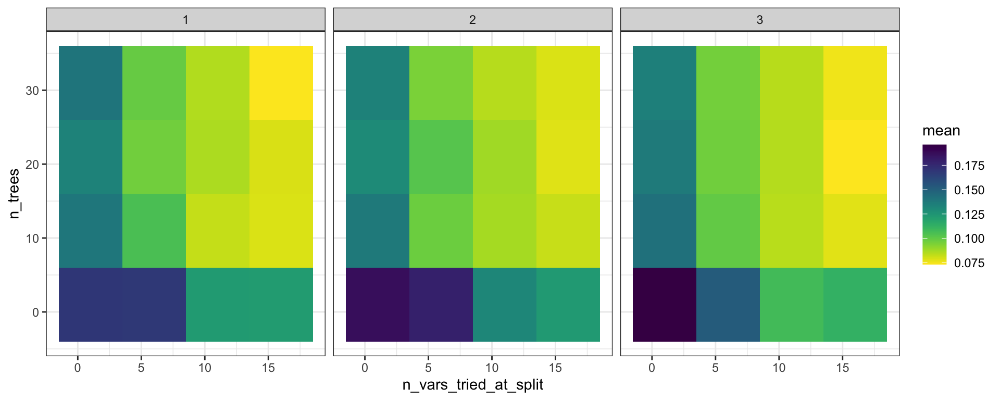
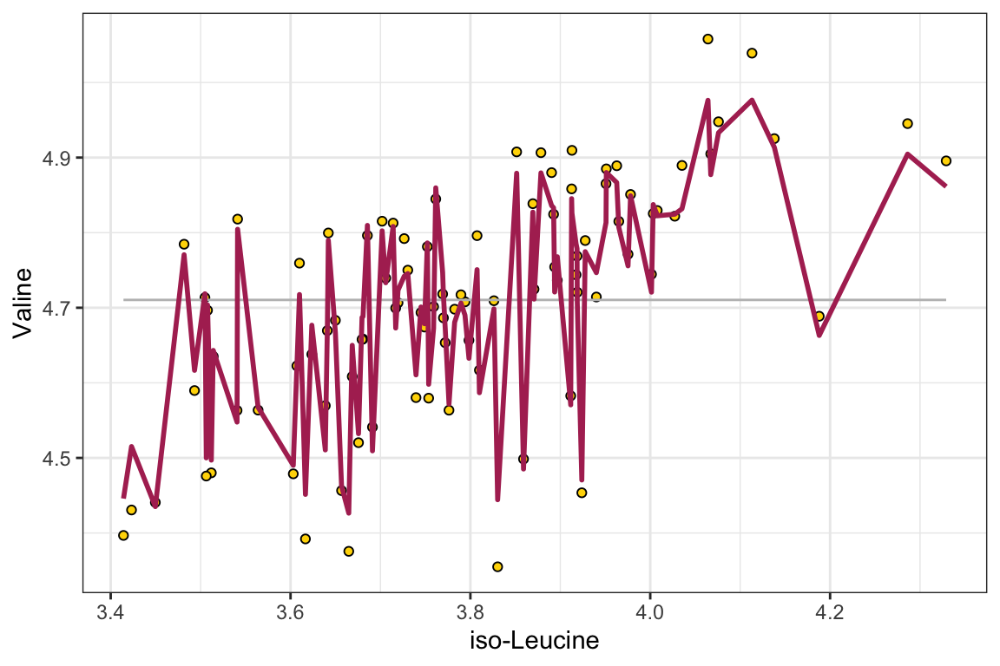
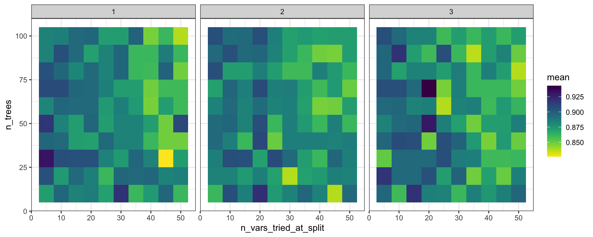

machine learning

The regression models in the previous chapter are simple enough to read directly: a slope, an intercept, a ranked list of coefficients. Some questions care less about reading the model than about getting the prediction right. Does this patient’s blood chemistry point to kidney disease? What Valine abundance should we expect, given thirty other metabolites at once? Questions like these, which sort samples into classes or predict a value from many measurements, come up wherever a chemical profile is used to diagnose, classify or forecast. This chapter turns to flexible models that are judged mainly by how well they predict, starting with random forests, which can predict either a number (regression) or a category (classification). Because a flexible model can fit the noise in its own data, the chapter also covers why a model is judged on data it has not seen.
This chapter is a draft. It currently holds the random-forest material that used to sit in the numerical models chapter, and will grow into a full chapter on training, testing and comparing flexible models against simple ones.
why hold data back
Increasingly complex predictive models do not always have higher accuracy. If a model is too complex we say that the model is ‘overfitted’, which means that the model is capturing noise and random fluctuations in the input data and using those erroneous patterns in its predictions. On the other hand, if a model is not complex enough then it will not be able to capture important true patterns in the data that are required to make accurate predictions. This means that we have to build models with the right level of complexity.
To build a model with the appropriate level of complexity we usually use this process: (i) separate out 80% of our data and call it the training data, (ii) build a series of models with varying complexity using the training data, (iii) use each of the models to make predictions about the remaining 20% of the data (the testing data), (iv) whichever model has the best predictive accuracy on the remaining 20% is the model with the appropriate level of complexity.
The examples below use metabolomics_data with its missing values filled in by the median of each column, as in the regression chapter:
random forests
Random forests are collections of decision trees that can be used for predicting categorical variables (i.e. a ‘classification’ task) and for predicting numerical variables (a ‘regression’ task). Random forests are built by constructing multiple decision trees, each using a randomly selected subset of the training data, to ensure diversity among the trees. At each node of each tree, a number of input variables are randomly chosen as candidates for splitting the data, introducing further randomness beyond the data sampling. Among the variables randomly selected as candidates for splitting at each node, one is chosen for that node based on a criterion, such as maximizing purity in the tree’s output, or minimizing mean squared error for regression tasks, guiding the construction of a reliable ensemble model. The forest’s final prediction is derived either through averaging the outputs (for regression) or a majority vote (for classification).
We can use the buildModel2() function to make a random forest model. We need to specify data, a model type, input and output variables, and in the case of a random forest model, we also need to provide a list of tuning parameters: n_vars_tried_at_split, n_trees, and min_leaf_size. Here is more information on those parameters:
n_vars_tried_at_split(often called “mtry” in other packages): this parameter specifies the number of variables that are randomly sampled as candidate features at each split point in the construction of a tree. The main idea behind selecting a subset of features (variables) is to introduce randomness into the model, which helps in making the model more reliable and less likely to overfit to the training data. By trying out different numbers of features, the model can find the right level of complexity, leading to more generalized predictions. A smaller value ofn_vars_tried_at_splitincreases the randomness of the forest, potentially increasing bias but decreasing variance. Conversely, a larger value makes the model resemble a bagged ensemble of decision trees, potentially reducing bias but increasing variance.n_trees(often referred to as “num.trees” or “n_estimators” in other packages): this parameter defines the number of trees that will be grown in the random forest. Each individual tree predicts the outcome based on the subset of features it considers, and the final prediction is typically the mode (for classification tasks) or average (for regression tasks) of all individual tree predictions. Increasing the number of trees generally improves the model’s performance because it averages more predictions, which tends to reduce overfitting and makes the model more stable. However, beyond a certain point, adding more trees offers diminishing returns in terms of performance improvement and can significantly increase computational cost and memory usage without substantial gains.min_leaf_size(often referred to as “min_n” in other packages): this parameter sets the minimum number of samples that must be present in a node for it to be split further. Increasing this value makes each tree in the random forest less complex by reducing the depth of the trees, leading to larger, more generalized leaf nodes. This can help prevent overfitting by ensuring that the trees do not grow too deep or too specific to the training data. Careful tuning of this parameter strikes a balance between the model’s ability to capture the underlying patterns in the data and its generalization to unseen data.
buildModel2() explores a number of settings for these parameters, then selects the combination with the highest predictive accuracy. In this function:
-
dataspecifies the dataset to be used for model training, heremetabolomics_data. -
model_typedefines the type of model to build, with “random_forest_regression” indicating a random forest model for regression tasks. -
input_variablesselects the features or predictors for the model, here using columns 3 to 32 frommetabolomics_dataas predictors. -
output_variableis the target variable for prediction, in this case, “Valine”.
The optimization_parameters argument takes a list to define the grid of parameter values to try: n_vars_tried_at_split, n_trees, and min_leaf_size. The seq() function generates sequences of numbers and is used here to create ranges for each parameter:
-
n_vars_tried_at_split = seq(1,20,5)generates a sequence for the number of variables tried at each split, starting at 1 and going up in steps of 5 without passing 20 (1, 6, 11, 16). -
n_trees = seq(1,40,10)creates a sequence for the number of trees in the forest, starting at 1 and going up in steps of 10 without passing 40 (1, 11, 21, 31). -
min_leaf_size = seq(1,3,1)defines the minimal size of leaf nodes, ranging from 1 to 3 in steps of 1.
This setup creates a grid of parameter combinations where each combination of n_vars_tried_at_split, n_trees, and min_leaf_size defines a unique random forest model. The function tests each combination within this grid to identify the model that performs best according to a given evaluation criterion, effectively searching through a defined parameter space to optimize the random forest’s performance. This approach allows for a systematic exploration of how different configurations affect the model’s ability to predict the output variable, enabling the selection of the most effective model configuration based on the dataset and task at hand.
random_forest_model <- buildModel2(
data = metabolomics_data,
model_type = "random_forest_regression",
input_variables = colnames(metabolomics_data)[3:32],
output_variable = "Valine",
optimization_parameters = list(
n_vars_tried_at_split = seq(1,20,5),
n_trees = seq(1,40,10),
min_leaf_size = seq(1,3,1)
)
)
names(random_forest_model)
## [1] "model_type" "metrics" "model"The above code builds our random forest model. Its output provides both the model itself and key components indicating the performance and configuration of the model. Here’s a breakdown of each part of the output:
$model_type tells us what type of model this is.
$model shows the configuration of the best random forest model that was created.
$metrics provides detailed results of model performance across the different combinations of the random forest parameters. For each combination, it shows:
-
n_vars_tried_at_split,n_treesandmin_leaf_size: the specific values used in that model configuration. -
.metric: the performance metric used. For a regression forest this is RMSE, the root mean squared error of the predictions; for a classification forest it is accuracy, how often the model predicts the correct class. -
.estimator: the type of calculation behind the metric (“standard” for RMSE; “binary” when a classifier chooses between two classes). -
mean: the average of the metric across the cross-validation folds. -
fold_cross_validation: the number of folds used in cross-validation. -
std_err: the standard error of the mean, providing an idea of the variability in model performance. -
.config: a unique identifier for each model configuration tested.
We can thus inspect the performance of the model based on the specific parameters used during configuration. This can help us understand if we are exploring the right parameter space. In this case we are doing regression, and the performance metric reported is RMSE: root mean squared error. Smaller values indicate a better model.
random_forest_model$metrics %>%
ggplot(aes(x = n_vars_tried_at_split, y = n_trees, fill = mean)) +
facet_grid(.~min_leaf_size) +
scale_fill_viridis(direction = -1) +
geom_tile() +
theme_bw()
Figure: Prediction error of random forest models for valine across the parameter grid. Tile plots, one panel per minimum leaf size; the horizontal axis is the number of variables tried at each split, the vertical axis is the number of trees, and tile color is the mean root mean squared error across cross-validation folds, with lighter tiles marking lower error. Each tile is one parameter combination. Data: metabolomics_data.
We can use the model to make predictions with the predictWithModel() function:
ggplot() +
geom_point(
data = metabolomics_data,
aes(x = `iso-Leucine`, y = Valine), fill = "gold", shape = 21, color = "black"
) +
geom_line(aes(
x = metabolomics_data[["iso-Leucine"]],
y = mean(metabolomics_data$Valine)
), color = "grey") +
geom_line(aes(
x = metabolomics_data[["iso-Leucine"]],
y = unlist(predictWithModel(
data = metabolomics_data,
model_type = "random_forest_regression",
model = random_forest_model$model
))),
color = "maroon", size = 1
) +
theme_bw()
Figure: Valine abundance predicted by the best random forest model. Scatter plot of measured valine against iso-leucine abundance (gold points), with the mean valine abundance as a grey line and the random forest’s predictions as a maroon line. Each point is one patient. Data: metabolomics_data.
In addition to regression modeling, random forests can also be used to do classification modeling. In classification modeling, we are trying to predict a categorical outcome variable from a set of predictor variables. For example, we might want to predict whether a patient has a disease or not based on their metabolomics data. All we have to do is set the model_type to “random_forest_classification” instead of “random_forest_regression”. Let’s try that now:
set.seed(123)
unknown <- metabolomics_data[35:40,]
rfc <- buildModel2(
data = metabolomics_data[c(1:34, 41:93),],
model_type = "random_forest_classification",
input_variables = colnames(metabolomics_data)[3:75],
output_variable = "patient_status",
optimization_parameters = list(
n_vars_tried_at_split = seq(5,50,5),
n_trees = seq(10,100,10),
min_leaf_size = seq(1,3,1)
)
)
rfc$metrics %>% arrange(desc(mean))
## # A tibble: 300 × 9
## n_vars_tried_at_split n_trees min_leaf_size .metric
## <dbl> <dbl> <dbl> <chr>
## 1 20 70 3 accuracy
## 2 5 30 1 accuracy
## 3 20 50 3 accuracy
## 4 20 10 2 accuracy
## 5 10 90 3 accuracy
## 6 15 10 3 accuracy
## 7 30 10 1 accuracy
## 8 5 20 3 accuracy
## 9 5 50 1 accuracy
## 10 20 40 2 accuracy
## # ℹ 290 more rows
## # ℹ 5 more variables: .estimator <chr>, mean <dbl>,
## # std_err <dbl>, .config <chr>,
## # fold_cross_validation <int>Our best settings lead to a model with >90% accuracy. Again we can look at how accuracy varies across the parameter grid:
rfc$metrics %>%
ggplot(aes(x = n_vars_tried_at_split, y = n_trees, fill = mean)) +
facet_grid(.~min_leaf_size) +
scale_fill_viridis(direction = -1) +
geom_tile() +
theme_bw()
Figure: Accuracy of random forest classifiers for patient status across the parameter grid. Tile plots, one panel per minimum leaf size; the horizontal axis is the number of variables tried at each split, the vertical axis is the number of trees, and tile color is the mean accuracy across cross-validation folds. Each tile is one parameter combination. Data: metabolomics_data, with six patients held out.
We can also make predictions on data the model has not seen, here the six patients that were held out:
predictions <- predictWithModel(
data = unknown,
model_type = "random_forest_classification",
model = rfc$model
)
data.frame(
real_status = metabolomics_data[35:40,]$patient_status,
predicted_status = unlist(predictions)
)
## real_status predicted_status
## .pred_healthy1 healthy 0.82857143
## .pred_healthy2 healthy 0.90000000
## .pred_healthy3 healthy 0.79285714
## .pred_healthy4 kidney_disease 0.01904762
## .pred_healthy5 kidney_disease 0.03571429
## .pred_healthy6 kidney_disease 0.04285714
## .pred_kidney_disease1 healthy 0.17142857
## .pred_kidney_disease2 healthy 0.10000000
## .pred_kidney_disease3 healthy 0.20714286
## .pred_kidney_disease4 kidney_disease 0.98095238
## .pred_kidney_disease5 kidney_disease 0.96428571
## .pred_kidney_disease6 kidney_disease 0.95714286chapter summary
Flexible models are judged by how well they predict data they have not seen, because a model that is too complex fits the noise in its training data. A random forest builds many decision trees, each from a random subset of the data and trying a random subset of the inputs at each split, then averages their outputs (regression) or takes a majority vote (classification). The kind of output decides the model_type. buildModel2() tries every combination of settings in the optimization_parameters grid and reports each one’s cross-validated metric: RMSE for regression, where lower is better, and accuracy for classification, where higher is better. predictWithModel() then applies the best model to new samples.
Download this summary as a one-page PDF.
| Function or setting | What it is for | What we set or vary |
|---|---|---|
model_type = "random_forest_regression" |
a forest that predicts a number, such as Valine abundance | used with a numeric output_variable
|
model_type = "random_forest_classification" |
a forest that predicts a category, such as patient_status
|
used with a categorical output_variable
|
buildModel2() |
building and tuning the forest |
data, model_type, input_variables, output_variable, optimization_parameters
|
optimization_parameters |
the grid of settings to try, as a list() of seq() ranges |
the three settings below |
n_vars_tried_at_split |
how many inputs are candidates at each split | smaller values make the forest more random |
n_trees |
how many trees the forest grows | more trees give steadier predictions, with diminishing returns |
min_leaf_size |
the fewest samples a node needs before it is split again | larger values make simpler, less overfitted trees |
$metrics |
one row per combination, with mean holding its cross-validated .metric
|
for a classifier, sort with arrange(desc(mean)) (higher accuracy is better), or map it across the grid with geom_tile()
|
predictWithModel() |
predictions for samples the model was not built on |
data, model_type, model
|
further reading
StatQuest: Random Forests Part 1 - Building, Using and Evaluating. Josh Starmer’s short video builds a random forest from bootstrapped decision trees, then shows how the out-of-bag samples measure its accuracy. A good first pass on what a random forest is before running
buildModel2().Common machine learning tasks. An overview of core machine learning paradigms (classification, regression, and clustering) with brief definitions and examples to help orient the reader among ML methods.
Tidymodels: tidy machine learning in R. Rebecca Barter’s comprehensive walkthrough of the tidymodels ecosystem, covering data preprocessing, model specification, cross-validation, and hyperparameter tuning in a unified tidyverse-friendly workflow.
Tutorial on tidymodels for Machine Learning. Demonstrates how to use tidymodels as a modular alternative to caret, walking through a complete machine learning project with preprocessing, model building, and hyperparameter tuning.
Dials, Tune, and Parsnip: Tidymodels’ Way to Create and Tune Model Parameters. Explores three tidymodels packages for managing and tuning hyperparameters, explaining how dials, tune, and parsnip work together in a machine learning workflow.